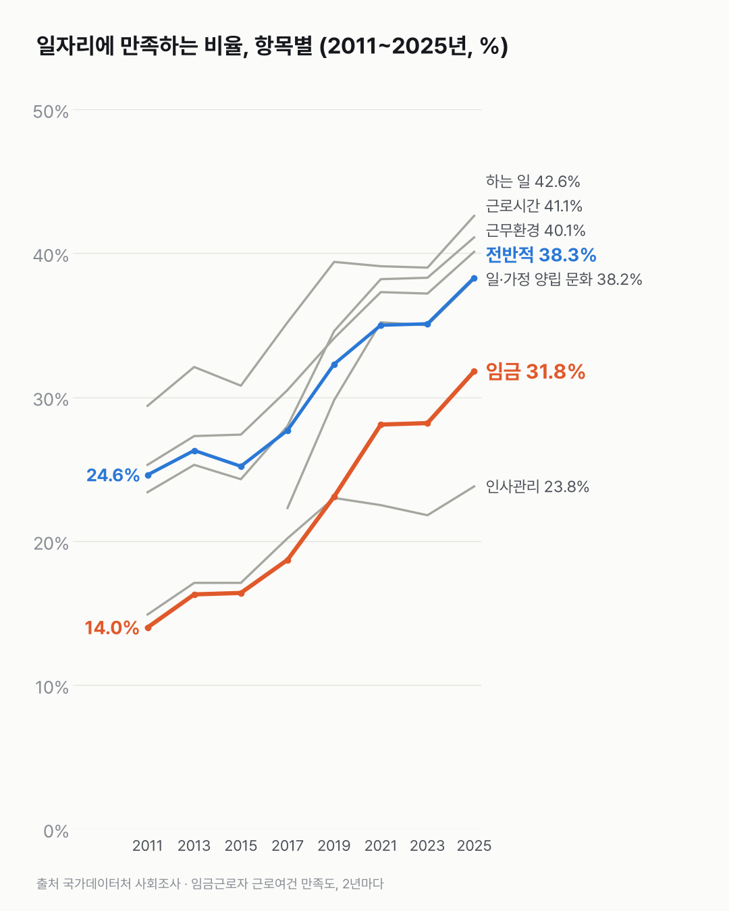
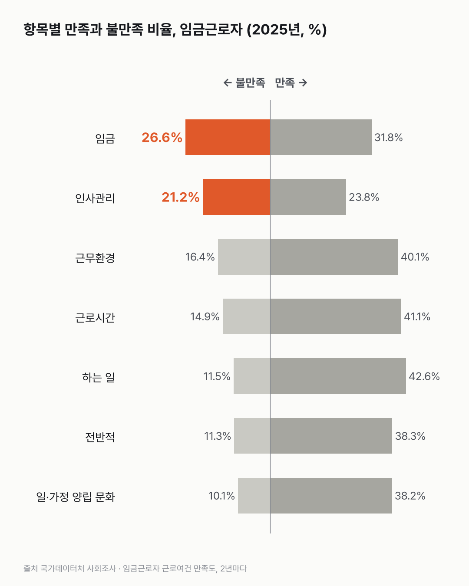

일자리 만족은 15년 새 늘었고, 불만이 가장 많은 건 월급이에요
일자리 만족은 근로시간과 월급 쪽에서 많이 나아졌어요. 그런데 회사가 사람을 대하는 방식(인사관리)에 대한 만족은 2019년부터 거의 그대로예요.

3줄 요약
- 지금 일자리에 전반적으로 만족한다는 임금근로자는 2011년 24.6%에서 2025년 38.3%가 됐어요.
- 많이 늘어난 건 근로시간(23.4% → 41.1%)과 임금(14.0% → 31.8%) 만족이에요.
- 그래도 2025년 불만이 가장 많은 항목은 임금(26.6%)이고, 만족이 가장 낮은 건 인사관리(23.8%)예요.
42.6%. 월급 받는 사람 가운데 지금 하는 일 자체에 만족한다는 비율이에요. 일곱 항목 중 가장 높아요. 불만족은 11.5%예요.
전반적인 만족은 2017년(27.7%)까지 큰 변화가 없었어요. 2019년(32.3%)부터 올라 2025년 38.3%가 됐어요. 일곱 항목 모두 2011년보다 만족이 늘었어요.
그런데 불만이 가장 많은 것도 임금이에요. 2025년 26.6%가 불만이라고 했어요. 다음은 인사관리(21.2%)예요. 인사관리는 만족이 23.8%로 가장 낮고, 2019년(23.0%) 이후 거의 그대로예요. 이 숫자 앞에서 잠깐 멈췄어요.
20대의 전반 만족은 2011년 26.2%에서 2025년 41.0%로 올라, 전체보다 조금 높아요. 60세 이상은 32.8%로 가장 낮아요.

가장 많은 답은 사실 '보통'이었어요. 대부분 항목에서 40~50%가 보통을 골랐어요. 만족과 불만 사이 그 넓은 가운데에 어떤 마음이 들어 있는지는 숫자로 나뉘지 않더라고요.
이 숫자는 어디서 왔나요
출처
기준일 2011~2025년, 2년마다(홀수 해) 한 조사예요.
국가데이터처사회조사
- 근로여건 만족도 7개 항목KOSIS DT_1SSLA0812R원본 보기
항목별 5점 척도 응답 비율, 성별·나이대, 2년 주기 2011~2025년
어떻게 셌나요
- 2년마다 하는 설문조사예요. 지난 1주 동안 임금근로자로 일한 13세 이상에게 물었어요. 2009년은 15세 이상이라 2011년부터 썼어요.
- 항목마다 매우 만족부터 매우 불만족까지 다섯 단계로 답해요. '만족'은 매우·약간 만족을 더한 값, '불만족'은 약간·매우 불만족을 더한 값이에요. 나머지는 '보통'과 일부 해의 '모르겠다'예요.
- 임금 만족은 '하는 일과 비교하여' 얼마나 만족하는지 물어요. 금액 자체에 대한 만족과는 달라요.
- 일·가정 양립 문화 항목은 2017년부터 있어요.
- 믿기 어렵다고 표시된 칸(*)은 없었어요.
한계 5가지
이 데이터로 말할 수 없는 것
- 같은 사람을 따라간 건 아니에요. 그해 임금근로자의 응답이에요. 일하는 사람의 구성(나이·업종)이 바뀐 영향이 섞여요.
- 5점 척도 응답은 사람마다 기준이 달라요. 시대에 따라 '만족'의 기준도 바뀔 수 있어요.
- 만족이 늘어난 원인은 이 데이터로 알 수 없어요. 근로시간 단축 제도 등과 연결할 근거는 이 표에 없어요.
- '보통'이 가장 많아요. 대부분 항목에서 40~50%가 보통이라, 만족과 불만족만 보면 전체 그림의 일부만 보여요.
- 이직을 권하거나 말리는 글은 아니에요.
새 글 나오면 받아 보기
피드 리더 앱에 이 사이트 주소를 한 번 넣어 두면, 새 글이 올라올 때 앱에 떠요. 가입이나 메일 주소는 필요 없어요.
받는 법 보기
- 피드 리더 앱을 하나 골라요. 새 글을 모아 보여 주는 앱이에요. 예를 들면 Feedly나 Inoreader가 있어요. 둘 다 무료고 웹·휴대폰에서 써요.
- 앱에서 '구독 추가'(+)를 누르고 아래 주소를 붙여 넣어요.
- 끝이에요. 새 글이 올라오면 앱 목록에 떠요.
https://protofu.github.io/opendata-insight/feed.xmlFeedly를 쓴다면 여기를 눌러 바로 추가할 수도 있어요.